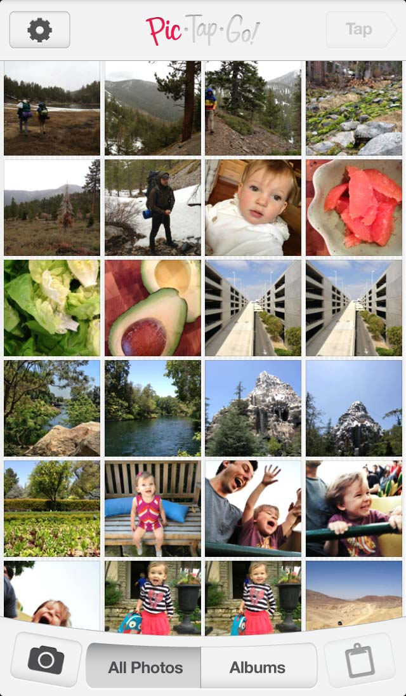

PicTapGo Basics
Editing a photo in PicTapGo happens in three easy steps - just...
Pic
Tap the photo you want to edit in your photo library.
You can also take a photo with your camera by tapping the camera button at bottom left.
To paste a photo from another app, tap the clipboard button at bottom right.
Tap
Scroll down and tap a filter to apply, then use the slider to adjust the strength to your liking.
Scroll down again to layer as many as you'd like!
As PicTapGo learns what you like, your favorite filters will appear in the My Style tab.
When you're done adding and adjusting filters, tap Go!
Go!

Tap a service to share to, or save your photo to your device.
If you like your combination of filters, save it as a recipe to use later.